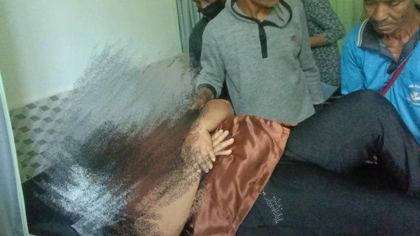

Hanya Sebulan Turun Kelas, RSUD Ende Kembali ke Kelas C
Ende,Kementerian Kesehatan Republik Indonesia kembali mengumumkan hasil rewiew 615 kelas rumah sakit di seluruh Indonesia. Hasilnya, Rumah Sakit Umum Daerah (RSUD) Ende yang sebelumnya turun kelas dari kelas C ke kelas D, kini kembali ke kelas C.
Satu bulan lalu, tepatnya 15 Juli 2019, pihak Kementerian Kesehatan mengumumkan bahwa Rumah Sakit Umum Daerah Ende turun kelas menjadi Rumah Sakit kelas D.
Mendapat informasi demikian, pihak Rumah Sakit Umum Daerah Ende pun melakukan sanggahan dan melalui proses yang rumit, sanggahan yang diajukan diterima oleh tim kementerian kesehatan.
Direktur Rumah Sakit Umum Ende dr. Aries Dwi Lestari yang dikonfirmasi Ekora NTT di ruang kerjanya beberapa hari lalu membenarkan hal itu. Ia menuturkan, pengumuman hasil review ulang, kembali menempatkan Rumah Sakit Umum Daerah Ende pada kelas C.
Saya bersyukur atas kinerja rekan-rekan staf, manajemen dan semua pihak yang sudah berjuang membenahi seluruh data yang diminta baik data SDM, sarana prasarana maupun data alat kesehatan sehingga dapat dijadikan pertimbangan dalam sanggahan ke Kementerian Kesehatan. Akhirnya tanggal 28 Agustus 2019, kita mendapat hasil kembali ke kelas C, ungkap dr. Aries.
Memang agak rumit kita bereskan data itu karena semua harus dionlinekan. Terutama data Alkes yang kita miliki harus diinput semua baik merek, nomor seri, sampai harganya. Kita selesaikan dan bersyukur kerja keras manajemen bisa mendapat hasil yang baik, tambah dr. Aries yang baru bertugas 4 bulan sebagai Direktur RSUD Ende.
Direktur RSUD Ende, dr. Aries Dwi Lestari
Penetapan kelas rumah sakit ini tertuang dalam surat Direktur Jenderal Pelayanan Kesehatan Kementerian Kesehatan Republik Indonesia dr. Bambang Wibowo dengan nomor: yr. 05.01/III/3787/2019 tertanggal 28 agustus 2019.
Atas keputusan ini, kata dr. Aries, pihaknya telah melakukan pembenahan terutama akses pelayanan di IGD, pendaftaran maupun loket apotik di IGD yang dibuat terpisah dengan poliklinik sehingga pasien IGD tidak kesulitan. Hal ini dilakukan untuk memudahkan pasien dalam mengurus administrasi di rumah sakit.
“Kita siapkan loket daftar, ruang kasir dan loket apotik khusus untuk pelayanan pasien di IGD sehingga pasien tidak bolak balik ke Poliklinik, ungkapnya
Saat ini, menurut dr. Aries, pihaknya membuat beberapa kebijakan untuk menciptakan pelayanan prima bagi kenyamanan pasien di rumah sakit.
Diantaranya; penerapan jam kunjungan dan pembatasan jumlah anggota keluarga yang menjaga pasien, pembenahan infrastruktur air bersih dan interior seluruh ruangan, penambahan jumlah Satpam, pemasangan CCTV di seluruh kawasan rumah sakit hingga menciptakan pelayanan yang humanis kepada pasien.
Memang ini tidak mudah tapi komitmen saya ini semua harus jalan untuk perubahan dan pelayanan fasilitas kesehatan yang nyaman bagi masyarakat, tandasnya.
Dirinya mengimbau kepada masyarakat terutama keluarga pasien agar bersama-sama menciptakan kenyamanan, kebersihan serta mematuhi aturan yang ada di RSUD Ende untuk memberi rasa aman bagi pasien.
Ibu Kepsek di NTT Tewas Ditikam Orangtua Siswa, Emosi Anaknya Dilarang Ikut Ujian Kenaikan Kelas
Kasus penikaman berujung pembunuhan menimpa seorang ibu kepala sekolah di Nusa Tenggara Timur (NTT).
Diketahui yang menjadi korbannya adalah Delvina Azi.
Ia bertugas di Dasar Inpres (SDI) Ndora, Desa Ulupulu 1, Kecamatan Nangaroro, Kabupaten Nagekeo, NTT.
Sedangkan pelakunya merupakan orangtua siswa berinisial DD.
Kapolsek Nangaroro Iptu, Sudarmin Syafrudin membenarkan informasi itu.
Ia mengatakan, Delvina menghembuskan nafas terakhirnya di Rumah Sakit Umum Daerah (RSUD) Ende, Rabu 9 Juni 2021 dini hari.
Sebelumnya korban dirawat di Puskesmas Nangaroro.
"Benar, saya sedang berada di ruang jenazah RSUD Ende," ujarnya, Rabu 9 Juni 2021.
Sudarmin mengatakan, berdasarkan informasi dari Kepala Puskesmas Nangaroro bahwa ibu kepsek dirujuk ke RSUD Ende pada, Selasa 8 Juni 2021 sekira pukul 19:00 Wita.
Tiba di RSUD Ende sekira pukul 22.00 Wita dan keesokan harinya, Rabu 9 Juni sekira pukul 04.00 Wita, almarhum dinyatakan meninggal dunia.
"Semntara masih dilakukan ibadah di ruang jenazah, selanjutnya akan dibawa ke Boawae setelah singgah sebentar di Ndora," ungkapnya.
Diberitakan Pos Kupang sebelumnya, Kapolsek Nangaroro Iptu Sudarmin membenarkan kasus penikaman terhadap kepala SDI Ndora Delvina Azi yang terjadi, Selasa 8 Juni 2021 pagi.
Dijelaskan Sudarmin, kasus tersebut bermula ketika anak pelaku atas nama Eusabius Deviceli Laja disuruh pulang oleh kepsek untuk tidak boleh mengikuti ujian akhir kenaikan kelas.
Setelah mendengar informasi dari sang anak, pelaku langsung menuju ke rumah Kepala Desa Emilianus Meze.
Tujuan untuk menyampaikan pengeluhan tentang anak yang tidak bisa mengikuti ujian akhir kenaikan kelas.
Pada saat itu, pelaku melihat sangkur milik Kepala Desa yang digantung di dinding ruangan tamu dan langsung mengambil tanpa pemberitahuan kepala desa.
Saat itu juga pelaku menuju ke sekolah dan menanyakan kepada ibu Astin (guru/bendahara) tentang guru siapa yang menyuruh anaknya pulang. Namun tidak mendapat jawaban," ungkapnya.
Lanjutnya, pada kesempatan tersebut, korban melihat pelaku sedang memegang pisau sangkur dan menyampaikan bahwa akan melaporkan ke polisi.
Setelah mendengar ancaman kepala sekolah, pelaku bangun dan langsung mencabut pisau sangkur dan langsung menikam korban mengenai bagian perut sebelah kanan," jelasnya.
Setelah itu, tambah Sudarmin, pelaku menyerahkan pisau sangkur kepada penjaga sekolah Heronimus Wonga. Pelaku langsung menuju ke rumah kepala dusun Kristianus Meze untuk menyampaikan kejadian tersebut.
Pelaku meminta bapak dusun untuk bersama sama menyerahkan diri ke Polsek Nangaroro," ujarnya.
Kabupaten Ende Sempat Tak Miliki Dokter Ahli Ini, Kini RSUD Ende Miliki Dua Dokter Anestesi
Rumah Sakit Umum Daerah (RSUD) Ende kini sudah mempunyai dua orang dokter anestesi.
Keberadaan dua orang dokter anestesi di RSUD Ende sudah sejak lebaran tahun 2022 ini.
Padahal sebelumnya, rumah sakit plat merah milik pemerintah Kabupaten Ende tersebut tak memiliki dokter anestesi.
"Kami setelah lebaran, sudah ada dokter anestesi, dan sekarang sudah genap dua orang," ujar Direktris RSUD Ende, dr. Carolina M. Viany kepada Pos Kupang saat ditemui di ruang RSUD Ende, Jumat 8 Juli 2022.
Dikatakannya, kehadiran dua orang dokter anestesi tersebut berkat upaya yang dilakukan oleh RSUD Ende untuk memberikan pelayanan yang prima kepada para pasien.
"Kalau dokter Lisa itu kami cari di grup-grup dokter, akhirnya dia yang berasal dari aceh mau bekerja di sini. Kalau dokter Grace kami gunakan jalur PGDS," jelasnya.
dr. Carolina mengatakan, memang dokter grace bertugas hanya setahun di RSUD Ende. Namun pihaknya akan segera mencari dokter pengganti sebelum kontraknya berakhir.
"Kalau beliau kontraknya sudah selesai, maka kami akan segera menginput lagi lewat jalur PGDS. Kalau dokter yang satu rencana mau tes PNS disini," ungkapnya.
dr. Carolina mengaku, kehadiran dua dokter anestesi tersebut sudah sesuai dengan rekomendasi saat pelaksanaan akreditasi beberapa waktu lalu.
Untuk itu, kehadiran dua dokter anestesi tersebut diharapkan dapat menekan jumlah pasien yang akan dirujuk ke luar daerah.
"Karena ada hal-hal yang terpaksa keluar daerah, mungkin untuk MRI atau HD. Tapi kalau sudah ada dua dokter anestesi kita harapkan rujukan yang kemarin-kemarin bisa ditekan," pungkasnya.